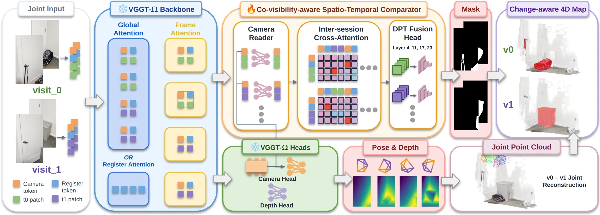
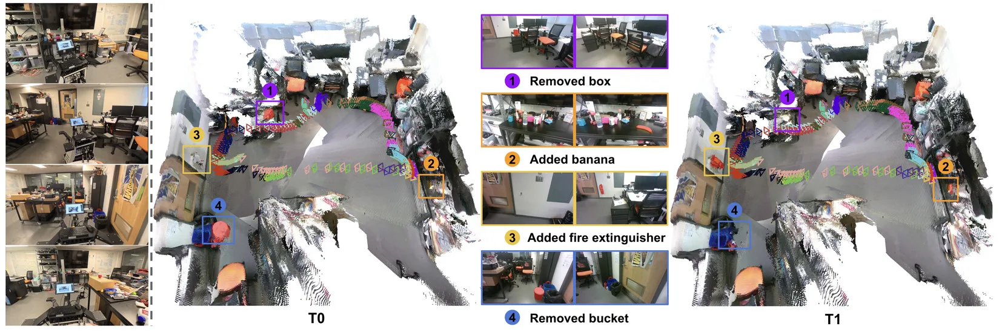
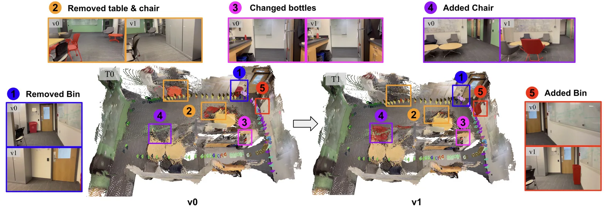
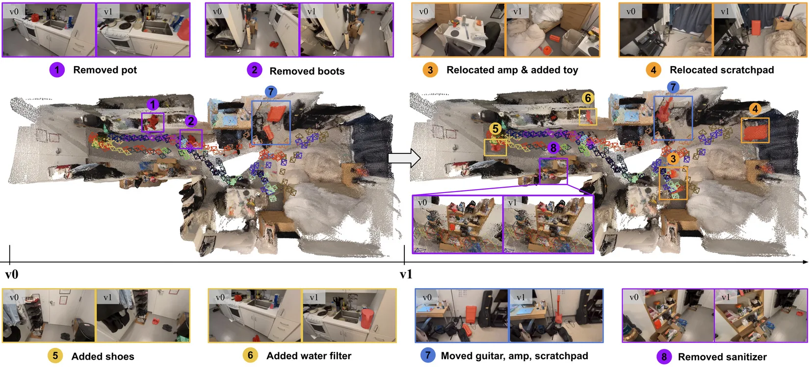
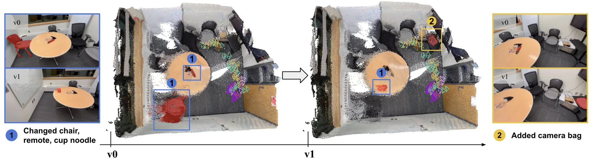

Argos：适配丰富几何先验的通用在线场景变化检测
Argos: Adapt Rich Geometric Priors for Generalizable Online Scene-Change-Detection
把几何基础模型 VGGT-Ω 的隐式 3D 特征通过“共视感知的跨 session 比较器”（相机读取器 + 跨 session 交叉注意力 + DPT 融合头）适配到“两趟未定位 RGB 观测”的变化检测与重建；自建 Argos-CD 等基准上变化 IoU 最多 +42.01%、F1 +27.91%，并接入 VGGT-SLAM 形成实时 change-aware 4D 建图（单次前向 0.59 s）。
change IoU
change IoU
latency
online loop
作者、单位与技术谱系 · Research context
作者与单位
研究脉络
- VGGT-Ω（Wang et al., 2026）/ VGGT（Wang et al., 2025）方法基座关系：以冻结 VGGT-Ω 作为把两趟 RGB 转成隐式几何特征与 token 的骨干，Argos 直接复用其 patch token。[论文 §4.1、§4.2]
- VGGT-SLAM 2.0（Maggio & Carlone, 2026）团队前作/方法上游关系：Argos-SLAM 是 VGGT-SLAM 2.0 的扩展，直接接其在线重建框架做 change-aware 4D 建图。[论文 §4.5]
- 团队变化检测前作：VSCD 与 TERDNet（Yoon & Kim, 2026a/b）、Generalizable SCD（Kim & Kim, 2025）问题上游关系：GIST 团队的多参考变化检测与鲁棒变化检测工作构成本文要超越的学习式 VSCD 上游。[论文 §2、§5.1]
- PAGE-4D（Zhou et al., 2026）/ D4RT方法上游关系：把 GFM 注意力作为跨视角对应线索的分析方式，为本文 probing VGGT-Ω 提供方法学先例。[论文 §4.1]
合作网络
- MIT ↔ GIST 跨机构共同署名MIT（Ruihan Xu、Kaichen Zhou、Luca Carlone） → GIST（Jiae Yoon、Ue-Hwan Kim）关系：共同署名[arXiv 首页署名]
- Carlone 团队 VGGT-SLAM 线Luca Carlone (MIT) → VGGT-SLAM 2.0 / Cadena et al. 2016 SLAM 综述关系：同作者技术延续（基于来源的解读）[论文 §4.5 与参考文献]
- 对 VGGT-Ω、SALAD、HSSD/SceneSmith 的公开技术依赖Argos / Argos-SLAM → VGGT-Ω、SALAD 描述子、HSSD 与 SceneSmith 仿真资产关系：明确技术依赖（非共同署名）[论文 §4.3、§4.5、§2]
作者与单位来自论文首页署名（含邮箱域名区分 MIT 与 GIST）；谱系依据正文引用与同作者作品标注为“基于来源的解读”。合作边仅记录共同署名与公开技术依赖，未发现公开的导师/师生关系，故不推断。
方法本质拆解 · What actually changed
是不是微调？
不是从头训练，也不是微调骨干。VGGT-Ω 全部组件连同其相机/深度头保持冻结，被训练的是新增的共视感知时空比较器三模块（相机读取器、跨 session 交叉注意力、DPT 变化融合头）；其中变化头由预训练深度头的 DPT 解码器热启动、只重置最后输出层，其余新增模块随机初始化。即：几何先验完全来自冻结 GFM，Argos 只学习“如何比较两趟几何”。
有没有额外约束？
新增约束在架构与损失两处：一是把相机 token 注入 patch token（使 patch 特征具备共视/位姿感知）、并用 visit 归属做对称跨 session 注意力；二是损失为仅作用于有效标注像素的加权二元交叉熵，并把 SCD 成对数据与 VSCD 视频数据按 2–64 帧交错采样。约束作用在特征读取方式与训练数据混合上，不修改输入接口、不引入新几何后端。
推理/后端到底做了什么？
推理时同一网络既作几何骨干（submap 重建）又作变化模型：给定 v0 的先验重建，v1 期间增量重建并对其做异步变化检测；为保在线，每次作业只检索最相关先验关键帧（SALAD 描述子匹配 + 跨步几何重投影过滤 + 场景质心覆盖搜索），输入封顶 64 张，单次前向 0.59 s。没有显式 BA/因子图二级后端，变化掩码直接驱动几何解耦。
方法本质是什么？
本质是：把“变化检测”从一个 2D 外观比较问题，转成一个“在同一几何帧里判断共视区域内容是否一致”的问题——重建训练出的 GFM 特征天然把同一 3D 位置在不同视角下对齐，因此可直接复用为跨历元一致性描述子；再用相机与 visit 归属让注意力只比较共视内容。它改变的是比较所依据的表征（隐式 3D 几何 vs 2D 特征），没有训练新骨干，也没有做离线优化。
输入为两趟未定位 RGB 图像集合；改变的位置是在冻结 VGGT-Ω 的中间 patch token 上注入相机读取器与跨 session 对称交叉注意力、并用 DPT 头解码变化掩码；合并动作是按掩码解耦预测深度/相机形成变化感知点云，并在 Argos-SLAM 中以 64 帧封顶的检索级联做异步在线更新；直接效果是变化 IoU 最多 +42.01%、F1 +27.91%，且单次变化检测前向仅 0.59 s。

动机与问题Motivation
动机与问题
论文指出长期自主的痛点：被移动的工具会让原计划失效、新摆放的家具会挡住原本可通行的路线，因此机器人必须持续更新空间记忆。现有方法有三类不足：其一，学习式检测器主要比较 2D 特征，在大视角偏移与遮挡下难以区分“真变化”和“视角/遮挡导致的表观差异”，且跨域泛化差；其二，显式 3D 流水线虽有空间上下文，却依赖带手工比较规则的重量级优化（如离线高斯泼溅重建）；其三，基准专用训练与稀缺的长序列标注限制了跨环境、跨轨迹的泛化。作者由此把问题重新定义为：能否直接用几何基础模型的隐式 3D 知识，从两趟未定位观测中做共视感知的变化判断？
方法Method
方法总览
输入是两趟访问的未定位 RGB 集合 I^{v0}（K 张）与 I^{v1}（N 张），输出是每张图的变化掩码 M̂_r、深度 D̂_r 与相机 ĝ_r∈R^9。骨干为冻结的 VGGT-Ω，取第 {4,11,17,23} 层 patch token（宽 d=2048）。在其上加装“共视感知时空比较器”三模块：相机读取器把最终相机 token 经按层 MLP 注入中间 patch token；跨 session 交叉注意力让两个 visit 各自作 query、对方作 context 做残差更新（两方向共享权重）；轻量 DPT 融合头 ℋ_CD 跨层融合后逐像素出 logits、阈值 0.5 得掩码。最后用预测深度与相机把掩码区域解耦，得到按 visit 查询的变化感知点云 P(v)。
关键技术细节
相机读取器按式(3) x̃=x+MLP_ℓ([c_r;x]) 把归一化相机 token c_r 广播到每张图所有选定层的 patch token；跨 session 交叉注意力按式(4) 对两 visit 做对称残差更新。训练时冻结全部 VGGT-Ω 组件，只训练比较器三模块；损失是仅作用于有效标注像素的加权二元交叉熵（应对变化像素稀疏的类别不平衡）；沿用 VGGT 配方并把 SCD（成对）与 VSCD（视频）数据集按序列长度 2–64 交错采样。实现（附录 A.1）：变化头由预训练深度头的 DPT 解码器热启动、只重置其最后输出层，相机读取器与交叉注意力随机初始化；每步从 {2,8,16,32,48,64} 抽样图像数、aspect ratio∈[0.5,2.0]，每 GPU 至多 64 张 256 分辨率；AdamW、weight decay 0.05、峰值 lr 1e-5、前 5% 线性 warm-up 后 cosine、梯度裁剪 1.0、bf16；50 epochs、双 RTX 4090 DDP 约 3 天。

实验Experiments
实验设置
训练集包括 SCD 任务的 VL-CMU-CD、PSCD、ChangeSim 与 VSCD 任务的 VSCD、Argos-CD-HSSD、Argos-CD-SceneSmith、SceneDiff；在各基准留出测试集与 Argos-CD-real（分布外真实场景）上评测。自建 Argos-CD（表 1）含 HSSD（501 pairs / 644K views / 167 scenes）与 SceneSmith（612 pairs / 138K views / 204 scenes）两个自动生成合成集及 8 段真实集 Argos-CD-real（5514 views）；HSSD 平均覆盖 4× 更多视觉各异地点、最长视频时长可达 VSCD/SceneDiff 的 2×。指标把变化检测当作二分类分割，报告 static IoU、change IoU、mIoU 与变化类 macro F1（%）。基线覆盖学习式 SCD（FC-EF、FC-Siam-diff、FC-Siam-conc、CSCDNet、DR-TANet、C-3PO、RobustSCD、TERDNet）、学习式 VSCD（VSCDNet）、零样本 SCD（ZSSCD、GeSCF）、零样本 VSCD（SceneDiff）与零样本高斯泼溅 O-SCD。模型变体：Ours、Ours-synthetic-only、Ours-finetune、Ours-foundation。
实验数字与比较
真实泛化（来源：论文表 2）：在 SceneDiff 数据集上 Ours-synthetic-only 变化 IoU 39.84 vs 最佳微调基线 VSCDNet-finetune 20.70，在 Argos-CD-real 上 20.87 vs 11.72；Ours-foundation 在 SceneDiff 上变化 IoU 62.54、F1 45.98。视频变化检测（表 3）：Ours 在 Argos-CD-HSSD 变化 IoU 78.64 / mIoU 88.51 / F1 62.16，在 Argos-CD-SceneSmith 82.43 / 90.75 / 69.08，在 VSCD 68.69 / 83.46 / 53.14；相对基线在 SceneSmith 上提升 +42.01% change IoU 与 +27.91% F1。成对图像 SCD（表 4）：Ours 在 PSCD 变化 IoU 62.83、ChangeSim 50.03、VL-CMU-CD 77.80，均领先 TERDNet（55.30 / 35.07 / 73.80）。在线系统（§5.6）：以 64 张图像为输入上限，单次变化检测前向 0.59 s；真实部署中 SLAM 环路平均每 8.2 s 产生一个新 submap，对应异步变化检测作业 6.9 s 完成，变化更新能跟上重建节奏。
消融/失败边界
架构消融（来源：论文表 5）：仅 DPT 变化头接 GFM 特征即超基线——VSCD 变化 IoU 47.97（换成 SAM 特征降到 27.89）；再加跨 session 交叉注意力升到 63.51；单加相机读取器反而降到 25.96（孤立使用有害）；两者同时启用达 68.69（F1 53.14）。这指出去掉跨 session 交叉注意力会损失约 20 个 IoU 点，而相机读取器必须与交叉注意力配合才有增益——位姿信息只有在引导跨 session 比较时才有效。失败边界明确：论文以带 † 的零样本基线（O-SCD）指出，当大部分物体被移除导致位姿配准错误、或查询帧落在参考帧分布之外造成渲染质量差时，基于高斯泼溅的重建式方法会产生错误变化预测（附录 A.5、图 9）；这正是 Argos 想用“直接比较隐式 GFM 特征”规避的失败模式。
局限与迁移Limitations & Transfer
局限与待核验
论文未设独立 Limitations 小节，仅以 O-SCD 的失败分析间接划界，以下为我们的待核验项：(a) 作者称“Code and datasets are available at the project website”，但截至本次抓取仓库未提供可运行的公开代码入口，端到端复现（尤其 Ours-foundation 的多数据集混合与 profile 规则）待核验；(b) Argos-SLAM 的实时数字（0.59 s / 8.2 s / 6.9 s）来自单台 RTX 5090 + Agilex 移动操作臂 + RealSense D455 的特定部署，跨硬件与更大场景的可扩展性未报告；(c) 4D 地图正确性主要由定性图（图 5）支撑，缺乏对“变化感知点云 P(v)”几何精度的定量指标；(d) 真实集 Argos-CD-real 仅 8 段 / 5514 帧，规模偏小，跨域泛化结论需在更多真实场景复核。
与你研究路线的关系
可迁移模块有三处：第一，“把几何基础模型的隐式特征当作跨历元一致性描述子”这一接口，与你在多传感器/多历元融合里“用统一几何先验判断观测能否作为新证据”的思路同构，可借用其“仅在共视且内容不一致时才判为变化”的判据来设计退化/异常检测门限。第二，Argos-SLAM 的“在线重建 + 异步变化检测作业 + 只检索最相关先验关键帧（SALAD 描述子匹配 + 跨步几何重投影过滤 + 场景质心覆盖搜索）”三级检索级联，是一个可迁移到长序列建图/回环的工程骨架，且把单次比较输入封顶在 64 帧以保亚秒推断。第三，其多指标协议提醒：低误差与高覆盖率/连续性必须联合解读。下一步实验建议：(1) 在自建 SLAM/多历元点云上做最小 A/B——2D 特征变化检测 vs GFM 隐式特征变化检测，量化大视角偏移下的 IoU 差异；(2) 复现其 64 帧封顶的检索级联，检验对你地图增量更新时延与一致性的影响；(3) 把“共视判据”接入你的 GNSS 遮挡/退化检测，用共视一致性而非单一残差阈值做异常门控。







